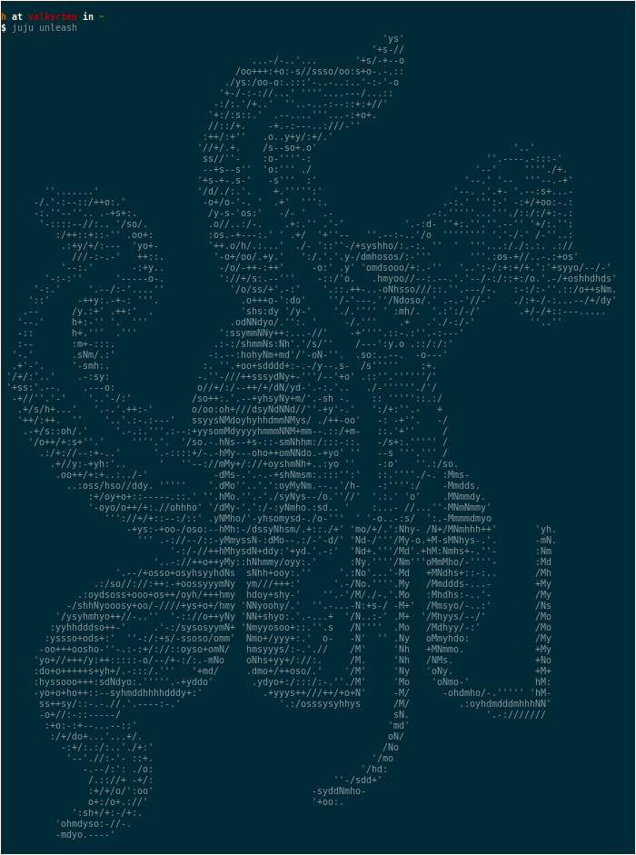

I’m working with juju to manage High Performance Computing clusters. It is an interesting software, but with horrible documentation. And of course, easter eggs are not documented.
After all, that’s why easter eggs have this name: they are secret features.
Last Friday, just a few minutes before ending the week, my boss told me “Do
you know what juju is? Find out how this command works.”. At first, I didn’t
get the question. I’ve been working with juju for a few days, I have an idea
of what it is. Instead, I was supposed to type in the terminal:
$ juju is
fucking amazing
So, juju has a very high self-esteem. Now that I know what juju is, I
need to find out how this command works. Let’s ask for help:
$ juju is --help
ERROR juju: "is" is not a juju command. See "juju --help".
Did you mean:
ssh
$ echo $?
1
Hmmm, looks like this command is quite hidden. Time to get the source and look around:
$ git clone git@github.com:juju/juju.git
$ cd juju
$ grep -iRn --exclude-dir=.git fuck
Hmmm. The string fuck is not in the repository. So, it is not just “quite
hidden”, they obscured it. I liked the challenge! Where to start searching, and
what to search for? They probably wrote that string in binary, or in something
weirder. There are too many files in this source code to go through everything,
we need another strategy.
Let’s start looking for that is not a juju command error-string:
$ grep -iRn --exclude-dir=.git "is not a juju command"
cmd/juju/commands/repl_test.go:207:ERROR juju: "foo" is not a juju command. Type "help" to see a list of commands.
cmd/juju/commands/main.go:236:const notFoundCommandMessage = `juju: %q is not a juju command. %s.
cmd/juju/commands/plugin_test.go:163: expectedHelp := `ERROR juju: "foo" is not a juju command. See "juju --help".
cmd/juju/commands/plugin_test.go:173: expectedHelp := `ERROR juju: "/foo" is not a juju command. See "juju --help".
cmd/juju/commands/plugin_test.go:183: expectedHelp := `ERROR juju: ".foo" is not a juju command. See "juju --help".
grep: testcharms/charm-repo/series/format2/hooks/symlink: No such file or directory
The file cmd/juju/commands/main.go appears to be an interesting starting
point, after all it is the file that parses the command line arguments! Just in
the beginning, there’s a very suspicious line (78):
var x = []byte("\x96\x8c\x8a\x91\x93\x9a\x9e\x8c\x97\x99\x8a\x9c\x94\x96\x91\x98\xdf\x9e\x92\x9e\x85\x96\x91\x98\xf5")
What the hell? Looking for this variable in the file shows something interesting on lines 126-138:
for i := range x {
x[i] ^= 255
}
if len(args) == 2 {
if args[1] == string(x[0:2]) {
os.Stdout.Write(x[9:])
return 0
}
if args[1] == string(x[2:9]) {
os.Stdout.Write(model.ExtractCert())
return 0
}
}
This variable is XORed with 255 and the CLI arguments are compared with parts
of it, casted to string. That’s too suspicious. I made a quick C++ code to find
out what that weird byte sequence XORed with 255 is:
#include <vector>
#include <iostream>
int main()
{
const std::vector<int> x {0x96, 0x8c, 0x8a, 0x91, 0x93, 0x9a, 0x9e,
0x8c, 0x97, 0x99, 0x8a, 0x9c, 0x94, 0x96,
0x91, 0x98, 0xdf, 0x9e, 0x92, 0x9e, 0x85,
0x96, 0x91, 0x98, 0xf5};
for (const auto i: x)
std::cout << i << " ";
std::cout << "\n";
for (const auto i: x)
std::cout << static_cast<char>(i^255);
std::cout << "\n";
return 0;
}
It starts with some standard libraries, that weird byte sequence written the
C++ way, prints the sequence, prints the sequence XORed with 255 as a char,
and returns:
$ g++ weird.cpp
$ ./a.out
150 140 138 145 147 154 158 140 151 153 138 156 148 150 145 152 223 158 146 158 133 150 145 152 245
isunleashfucking amazing
HA, that’s it! That weird byte sequence is isunleashfucking amazing. Lines
130-133 of the main.go file compare the CLI argument with the first 2 chars
of this string (is) and, if it matches, it prints the chars starting from
index 9 until the end (fucking amazing). Nice!
By XORing with 255 it is not possible to grep the source for that string,
so it keeps it as a secret.
And there’s more. Lines 134-137 compare the input to x[2:9]: unleash. So
there’s another easter egg!

And this was amazing! You can manage HPC clusters and unleash Cthulhu at the same time!
I like to try to understand how stuff works. We always learn something new this way. This something can be anything: a cool programming trick, a new algorithm, a better way to structure our code, and even an easter egg! The sky is the limit.
Btw, Cthulhu is in the file cmd/juju/model/data.go, XORed with 255 for
safety.